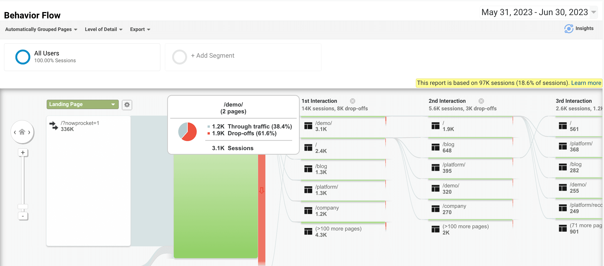
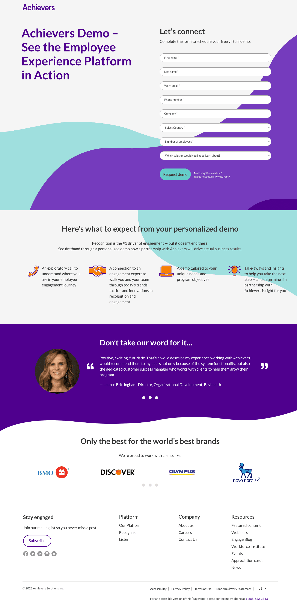

Case Study 03 — Achievers
Optimizing the form landing page for user completion
I redesigned a customizable form that adjusts to the user's request, resulting in an 80% higher user completion rate.
The form landing page saw a 62% drop off. It mixed inquiries from current clients and new prospects, and left sales reps confused about who their fresh leads actually were.
* Achievers is an employee engagement software that helps companies improve employee satisfaction, resulting in higher productivity and retention.
Role
UX/UI Designer & Researcher
Year
2023
Duration
8 weeks
Team
UX Researcher (me), Product Manager, 3 Developers, 1 Copywriter, 1 Project Manager
Deliverables
User interviews, competitive analysis, ideation workshop, mockup, user testing, prototype, final presentation
This is the final product
A customizable form that adjusts to the user's request.
The problem
A 62% drop off on the form landing page, and a form that couldn't tell customers from prospects
The form mixed inquiries from current clients and new prospects, which made it confusing for sales reps looking for fresh leads.
⚠ 62% drop off from the form landing page

Activities and outputs
5 user interviews
Affinity mapping
PowerPoint slides
Voice of the user
Key user insight: they didn't see clear options to communicate their needs
Product users were professionals from enterprise to mid-size businesses, and they weren't sure the form was even meant for them.
In their words
"Does customer care apply to me or only to existing customers? We mainly use Zoom to communicate with third parties."
— Director of HR, Springhill
Reality check
3 technical constraints stakeholder interviews revealed
From the start we knew changes had to work within the limits of the current sales process.
01
The current process requires sales to call prospects
02
Scheduling calendar meetings was not an option for unverified leads
03
Drop-down menus gave the option for a single selection only
Competitive research
Competitive intel: they distinguished current users from fresh prospects
Competitors offered a preferred method of communication and made it clear who the form was for.
Bonusly
Features
- Hyperlink "Are you a current user?"
- Title tags for each field
Salesforce
Features
- Multiple options for "How to be contacted"
- Starts with 3 fields, gradually asks for more information
Unique features used by competition
Clear classification for types of services to inquire about
3 options for communication, offered on the form
Form with multiple pages, gradually collecting more info
Activities and outputs
Competitive analysis
Stakeholder checkpoint
Prioritization
Priority matrix: revealed 3 things to prioritize
Separating customers from prospects, addressing user uncertainties about communication methods, and driving users to complete the form rose to the top — plotted against effort and importance.
Important
- Separating customers from prospects
- Addressing user uncertainties about communication methods
- Driving users to complete the form
- Giving users 3 contact options via text, email or phone
Important
- Reducing the form length
- Creating an option for auto calendar booking
- Chaining the form to a questionnaire across multiple pages to gradually collect info and qualify leads
Not important
- Introducing animation for better interactivity
Not important
- Adding more fields to collect further information and segregate inquiries
Activities and outputs
Root cause analysis
Stakeholder requests
Task flows
Direction
Our approach
01
Ask users about their inquiry first
02
Customize the length of the form based on the scenario
03
Let them know that "if they miss our call, we'll follow up with an email" to put them at ease
04
Set their expectations by better communicating what will happen during the call
Conclusion
The new form puts the user's needs at the centre of the design

Old form
New form
Salimeh provided strong initial feedback and followed up with more detailed feedback through her user testing sessions. This project resulted in an overall bump in website engagement.
— Lauren Ashmore, MBA
Direct Web Marketing Strategist – Global, Achievers
Impact & results
User completion rates rose by
80% on the form landing page
a fun, interactive form that made sense to users